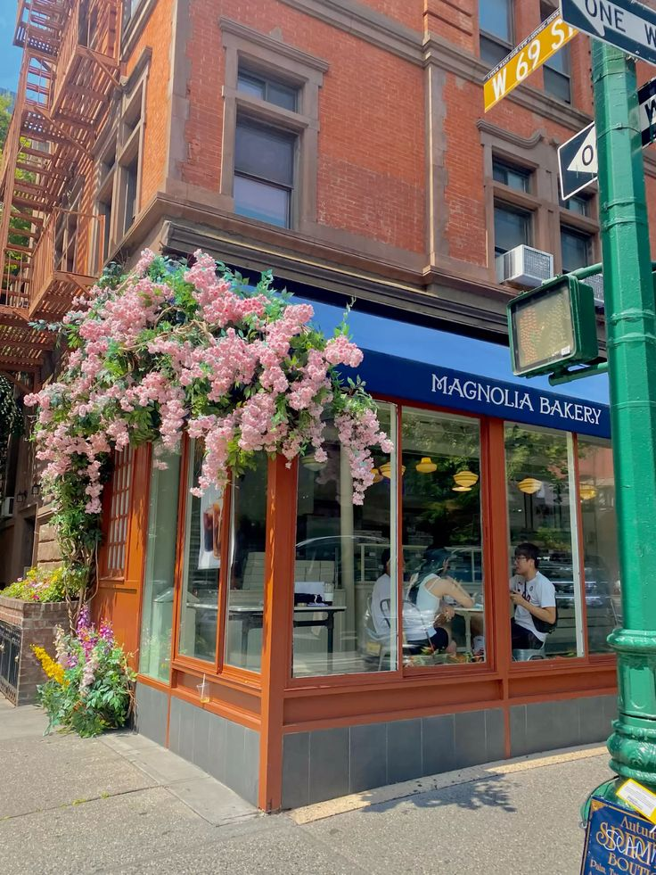
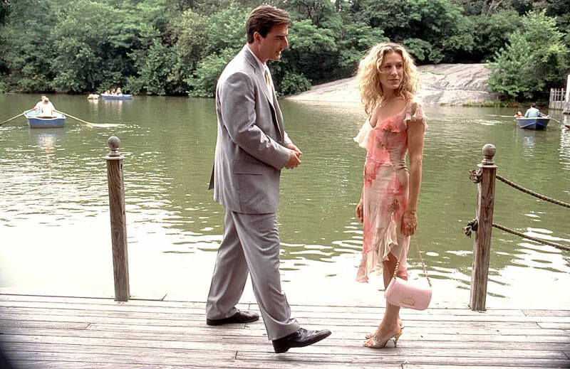
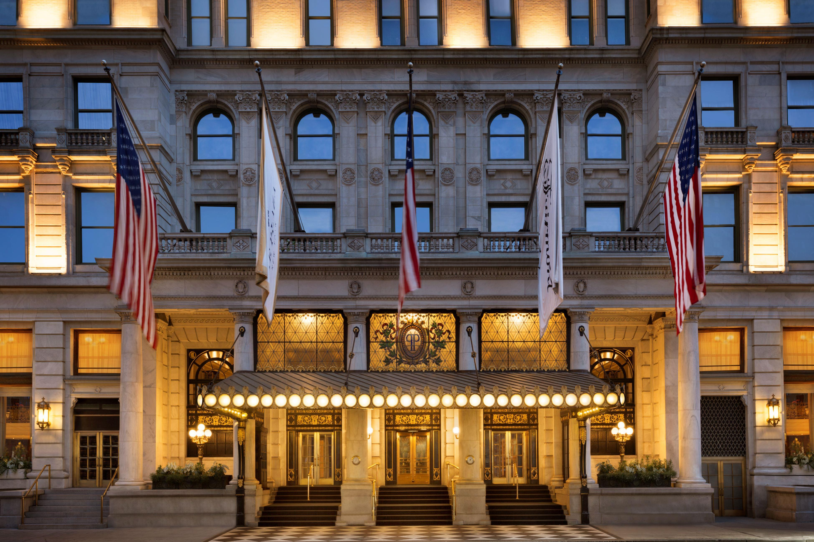

MAGNOLIA BAKERY
SWEET MOMENTS
A New York bakery famous for its cupcakes and its connection to the world of Carrie Bradshaw.
DISCOVER MOREADRESS: 401 Bleecker Street, New York, NY.
VIEW ON GOOGLE MAPSThe city is part of the story. Discover the places that made New York unforgettable.

SWEET MOMENTS
A New York bakery famous for its cupcakes and its connection to the world of Carrie Bradshaw.
DISCOVER MOREADRESS: 401 Bleecker Street, New York, NY.
VIEW ON GOOGLE MAPS
THE ICONIC STOOP
The iconic exterior staircase that became one of the most recognizable locations in the series.
DISCOVER MOREADRESS: 66 Perry Street, New York, NY.
VIEW ON GOOGLE MAPS
A ROMANTIC ESCAPE
A lakeside restaurant in Central Park, where Carrie and Big's lunch date takes an unexpected turn when they both fall into the water.
DISCOVER MOREADRESS: Central Park, East 72nd Street, New York, NY.
VIEW ON GOOGLE MAPS
YOUR GIRL IS LOVELY, HUBBELL
The well-known hotel where Carrie encounters Big after his engagement pary to Natasha, leading to one of the serie's most memorable moments.
DISCOVER MOREADRESS: 768 Fifth Avenue, New York, NY.
VIEW ON GOOGLE MAPS